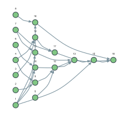

Edit distance: dynamic programming on a DAW
Levenshtein distance is the textbook dynamic program:
\[dp[i][j] = \min \begin{cases} dp[i-1][j] + 1 & \text{delete } a_i \\ dp[i][j-1] + 1 & \text{insert } b_j \\ dp[i-1][j-1] + [a_i \neq b_j] & \text{match or substitute} \end{cases}\]
On a DAW workflow this is not an algorithm you implement on the graph. The table of subproblems is the set of nodes, the recurrence is the edges, and memoization is structural: a node executes once, after which it is :clean, and every later consumer reads the stored result. Nothing was added to make that happen.
Three things follow that a hand-written DP table does not give you for free:
- memoization you can measure — every node's
exec_nis exactly1; - laziness —
execute!on a cell computes exactly the sub-rectangle it depends on; - incrementality — a character of the input is a node setting, so changing one character dirties exactly its dependency cone and leaves the rest of the table
:clean.
The nodes
using MetidaFlows
import MetidaFlows: PortSpec, MultiPort, getstatus, getnode, get_children
struct EdConst <: AbstractNodeType end # an integer constant
struct EdChar <: AbstractNodeType end # a character
struct EdSubCost <: AbstractNodeType end # substitution cost: 0 or 1
struct EdStep <: AbstractNodeType end # from + cost
struct EdCell <: AbstractNodeType end # min of three, and which won
spec_edconst() = NodeSpec("Ed const", PortSpec[],
[PortSpec("Out", Int, :out)], [:value])
spec_edchar() = NodeSpec("Ed char", PortSpec[],
[PortSpec("Out", Char, :out)], [:value])
spec_edsubcost() = NodeSpec("Ed sub cost",
[PortSpec("A", Char, :a), PortSpec("B", Char, :b)],
[PortSpec("Out", Int, :out)])
spec_edstep() = NodeSpec("Ed step",
[PortSpec("From", Int, :from), PortSpec("Cost", Int, :cost)],
[PortSpec("Out", Int, :out)])
# The three predecessors arrive in DIFFERENT ports. That is the only reason
# the cell can say which direction won.
spec_edcell() = NodeSpec("Ed cell",
[PortSpec("Diag", Int, :diag),
PortSpec("Up", Int, :up),
PortSpec("Left", Int, :left)],
[PortSpec("Cost", Int, :cost),
PortSpec("Choice", Symbol, :choice; kind = :terminal)])
MetidaFlows.execute_unsafe!(n::DataNode{EdConst}) =
(setdata!(n, :out, Int(n.settings[:value])); [:out])
MetidaFlows.execute_unsafe!(n::DataNode{EdChar}) =
(setdata!(n, :out, Char(n.settings[:value])); [:out])
MetidaFlows.execute_unsafe!(n::DataNode{EdSubCost}) =
(setdata!(n, :out, getinputdata(n, :a) == getinputdata(n, :b) ? 0 : 1); [:out])
MetidaFlows.execute_unsafe!(n::DataNode{EdStep}) =
(setdata!(n, :out, getinputdata(n, :from) + getinputdata(n, :cost)); [:out])
function MetidaFlows.execute_unsafe!(node::DataNode{EdCell})
diag = getinputdata(node, :diag)
up = getinputdata(node, :up)
left = getinputdata(node, :left)
best = min(diag, up, left)
setdata!(node, :cost, best)
setdata!(node, :choice, diag == best ? :diag : (up == best ? :up : :left))
return [:cost, :choice]
endOne cell of the table
EdChar(aᵢ) ─┐
├─▶ EdSubCost(i,j) ──┐
EdChar(bⱼ) ─┘ │
▼
dp[i-1][j-1] ─────────────▶ EdStep (diag) ──┐
dp[i-1][j] ─┬───────────▶ EdStep (up) ──┼─▶ EdCell(i,j) ─▶ :cost
dp[i][j-1] ─┼───────────▶ EdStep (left) ──┘ └───────▶ :choice
EdConst(1) ───┘Five nodes per interior cell. The borders — dp[0][j] = j and dp[i][0] = i — are constants, which is also why they do not depend on any character.
function build_edit_distance(a::AbstractString, b::AbstractString)
A = collect(a); B = collect(b)
m, n = length(A), length(B)
w = Workflow(0; type = :DAW)
w.name = "Edit distance"
one = add_node!(w, DataNode(EdConst, spec_edconst()))
setsettings!(w, one, Dict(:value => 1))
ca = Int[]; cb = Int[]
for ch in A
id = add_node!(w, DataNode(EdChar, spec_edchar()))
setsettings!(w, id, Dict(:value => ch)); push!(ca, id)
end
for ch in B
id = add_node!(w, DataNode(EdChar, spec_edchar()))
setsettings!(w, id, Dict(:value => ch)); push!(cb, id)
end
cell = Matrix{Tuple{Int, Symbol}}(undef, m + 1, n + 1)
for j in 0:n
id = add_node!(w, DataNode(EdConst, spec_edconst()))
setsettings!(w, id, Dict(:value => j)); cell[1, j + 1] = (id, :out)
end
for i in 1:m
id = add_node!(w, DataNode(EdConst, spec_edconst()))
setsettings!(w, id, Dict(:value => i)); cell[i + 1, 1] = (id, :out)
end
for i in 1:m, j in 1:n
sc = add_node!(w, DataNode(EdSubCost, spec_edsubcost()))
add_connection!(w, ca[i], :out, sc, :a)
add_connection!(w, cb[j], :out, sc, :b)
pid, pport = cell[i, j + 1] # dp[i-1][j]
up = add_node!(w, DataNode(EdStep, spec_edstep()))
add_connection!(w, pid, pport, up, :from)
add_connection!(w, one, :out, up, :cost)
pid, pport = cell[i + 1, j] # dp[i][j-1]
lf = add_node!(w, DataNode(EdStep, spec_edstep()))
add_connection!(w, pid, pport, lf, :from)
add_connection!(w, one, :out, lf, :cost)
pid, pport = cell[i, j] # dp[i-1][j-1]
dg = add_node!(w, DataNode(EdStep, spec_edstep()))
add_connection!(w, pid, pport, dg, :from)
add_connection!(w, sc, :out, dg, :cost)
c = add_node!(w, DataNode(EdCell, spec_edcell()))
add_connection!(w, dg, :out, c, :diag)
add_connection!(w, up, :out, c, :up)
add_connection!(w, lf, :out, c, :left)
cell[i + 1, j + 1] = (c, :cost)
end
(w = w, m = m, n = n, cell = cell, ca = ca, cb = cb,
answer = cell[m + 1, n + 1])
end
function edit_distance(a::AbstractString, b::AbstractString)
g = build_edit_distance(a, b)
scheduler!(g.w)
table = [getdata(g.w, g.cell[i, j]...) for i in 1:(g.m + 1), j in 1:(g.n + 1)]
(distance = getdata(g.w, g.answer...), table = table, g = g)
end
r = edit_distance("kitten", "sitting")
(distance = r.distance, nodes = length(r.g.w.nodes),
connections = length(r.g.w.connections), cells = length(r.g.cell))(distance = 3, nodes = 238, connections = 462, cells = 56)The whole table is there, not just the answer:
r.table7×8 Matrix{Int64}:
0 1 2 3 4 5 6 7
1 1 2 3 4 5 6 7
2 2 1 2 3 4 5 6
3 3 2 1 2 3 4 5
4 4 3 2 1 2 3 4
5 5 4 3 2 2 3 4
6 6 5 4 3 3 2 3The size of the graph is the size of the table
For strings of length m and n the graph has 5mn + 2m + 2n + 2 nodes and 11mn connections — and (m+1)(n+1) of those nodes are the cells of the table. Compare that with what the same recurrence costs as a plain recursion:
function edit_naive(a::AbstractString, b::AbstractString)
A = collect(a); B = collect(b); calls = Ref(0)
function go(i, j)
calls[] += 1
i == 0 && return j
j == 0 && return i
c = A[i] == B[j] ? 0 : 1
min(go(i - 1, j - 1) + c, go(i - 1, j) + 1, go(i, j - 1) + 1)
end
(distance = go(length(A), length(B)), calls = calls[])
end
using Printf
for (a, b) in (("kit", "sit"), ("flaw", "lawn"), ("kitten", "sitting"),
("sunday", "saturday"))
g = build_edit_distance(a, b)
nv = edit_naive(a, b)
@printf("%-18s %3d cells, %4d nodes naive recursion: %6d calls\n",
a * "/" * b, (length(a) + 1) * (length(b) + 1),
length(g.w.nodes), nv.calls)
endkit/sit 16 cells, 59 nodes naive recursion: 94 calls
flaw/lawn 25 cells, 98 nodes naive recursion: 481 calls
kitten/sitting 56 cells, 238 nodes naive recursion: 29737 calls
sunday/saturday 63 cells, 270 nodes naive recursion: 60121 callsEvery node ran exactly once, which is what memoization means here:
(all_once = all(n -> n.state.exec_n == 1, values(r.g.w.nodes)),
all_clean = all(n -> getstatus(n) === :clean, values(r.g.w.nodes)))(all_once = true, all_clean = true)Laziness: ask for a cell, get a sub-rectangle
scheduler! fills the whole table. execute! on one cell computes exactly the cells it depends on:
g = build_edit_distance("kitten", "sitting")
execute!(g.w, first(g.cell[3, 4])) # dp[2][3]
map(CartesianIndices(g.cell)) do ix
getstatus(getnode(g.w, first(g.cell[ix]))) === :clean ? '#' : '.'
end7×8 Matrix{Char}:
'#' '#' '#' '#' '.' '.' '.' '.'
'#' '#' '#' '#' '.' '.' '.' '.'
'#' '#' '#' '#' '.' '.' '.' '.'
'.' '.' '.' '.' '.' '.' '.' '.'
'.' '.' '.' '.' '.' '.' '.' '.'
'.' '.' '.' '.' '.' '.' '.' '.'
'.' '.' '.' '.' '.' '.' '.' '.'The characters outside that rectangle were not needed either:
(a3 = getnode(g.w, g.ca[3]).state.exec_n,
b4 = getnode(g.w, g.cb[4]).state.exec_n,
a1 = getnode(g.w, g.ca[1]).state.exec_n,
answer = getdata(g.w, g.answer...))(a3 = 0, b4 = 0, a1 = 1, answer = nothing)Incrementality: the cone of one character
A character is a setting of a source node, so changing it invalidates exactly what depends on it. Replace the third character of "kitten":
r2 = edit_distance("kitten", "sitting")
setsettings!(r2.g.w, r2.g.ca[3], Dict(:value => 'X'))
map(CartesianIndices(r2.g.cell)) do ix
getstatus(getnode(r2.g.w, first(r2.g.cell[ix]))) === :dirty ? 'x' : '.'
end7×8 Matrix{Char}:
'.' '.' '.' '.' '.' '.' '.' '.'
'.' '.' '.' '.' '.' '.' '.' '.'
'.' '.' '.' '.' '.' '.' '.' '.'
'.' 'x' 'x' 'x' 'x' 'x' 'x' 'x'
'.' 'x' 'x' 'x' 'x' 'x' 'x' 'x'
'.' 'x' 'x' 'x' 'x' 'x' 'x' 'x'
'.' 'x' 'x' 'x' 'x' 'x' 'x' 'x'Rows one and two survive untouched, and so does the whole border. Finishing the run recomputes only the dirty part:
execute!(r2.g.w, first(r2.g.answer))
(distance = getdata(r2.g.w, r2.g.answer...),
same_as_fresh = getdata(r2.g.w, r2.g.answer...) ==
edit_distance("kiXten", "sitting").distance)(distance = 4, same_as_fresh = true)For a pipeline this is the whole point of expressing a computation as a graph: the engine knows what a change can possibly affect, so the question "what has to be recomputed" has an exact answer instead of a conservative one.
What the graph does not do: the traceback
The forward pass unrolls into an acyclic graph. Recovering the edit script does not: the path through the table depends on the data, and a static structure cannot follow it. So every cell publishes the direction that won into a :terminal port, and the walk stays a loop in the caller's code:
function edit_traceback(g)
i, j = g.m, g.n
path = Symbol[]
while i > 0 && j > 0
ch = getdata(g.w, first(g.cell[i + 1, j + 1]), :choice)
push!(path, ch)
ch === :diag && (i -= 1; j -= 1)
ch === :up && (i -= 1)
ch === :left && (j -= 1)
end
append!(path, fill(:up, i)); append!(path, fill(:left, j))
path
end
r3 = edit_distance("kitten", "sitting")
reverse(edit_traceback(r3.g))7-element Vector{Symbol}:
:diag
:diag
:diag
:diag
:diag
:diag
:leftRead left to right: substitute k→s, keep i, t, t, substitute e→i, keep n, then insert g. Three operations that cost something, which is the distance. The division of labour is honest — the graph computes the table, the caller walks it.
Named ports, or MultiPort
A cell has three predecessors and a MultiPort input accepts all of them with one port. getinputdata hands them over as a Vector in the order the connections were made, so :choice is recoverable from the position — wire diagonal, up and left in that order and position 2 is "up":
struct EdCellMulti <: AbstractNodeType end
spec_edcellmulti() = NodeSpec("Ed cell multi",
[PortSpec("Options", Int, :options, MultiPort())],
[PortSpec("Cost", Int, :cost), PortSpec("Choice", Symbol, :choice)])
function MetidaFlows.execute_unsafe!(n::DataNode{EdCellMulti})
opts = getinputdata(n, :options) # [diag, up, left]
i = argmin(opts)
setdata!(n, :cost, opts[i])
setdata!(n, :choice, (:diag, :up, :left)[i])
return [:cost, :choice]
end
w = Workflow(0; type = :DAW)
src = [add_node!(w, DataNode(EdConst, spec_edconst())) for _ in 1:3]
for (id, v) in zip(src, (5, 3, 4)); setsettings!(w, id, Dict(:value => v)); end
mc = add_node!(w, DataNode(EdCellMulti, spec_edcellmulti()))
ids = [add_connection!(w, id, :out, mc, :options) for id in src]
scheduler!(w)
(cost = getdata(w, mc, :cost),
choice = getdata(w, mc, :choice),
what_the_node_sees = getinputdata(getnode(w, mc), :options),
connection_ids = ids)(cost = 3, choice = :up, what_the_node_sees = Any[5, 3, 4], connection_ids = [1, 2, 3])So the choice between them is no longer about what is possible. It is about what the interface says: a spec with :diag, :up and :left declares that a cell takes exactly three inputs with three fixed meanings, and a connection to the wrong one is rejected at add_connection!. A MultiPort declares only "any number of these", and the three meanings live in the node body's (:diag, :up, :left) tuple, where nothing checks them against the graph. This table is wired by one function, so either would do; the named version is the one that would survive someone else wiring a cell by hand.
MultiPort earns its keep where the count is genuinely variable — a sum, a minimum or a concatenation over however many producers are attached.
Things to watch
The table is the graph, so the graph grows with the input.
"sunday"against"saturday"is 270 nodes. That is fine for a workflow built once and re-run on changing inputs, which is where incrementality pays; it is the wrong shape for a one-shot computation on large strings.The border does not depend on the characters.
dp[0][j] = jis a constant node, so no character change ever dirties it — visible in the map above as the untouched first row and column.:choiceis:terminalon every cell, so nothing is connected to it. A port kind lives in the spec and a spec is shared by all nodes of its type — see Horner's scheme for what that costs when only one instance should have a terminal output.
The graph
The lattice for two short words. The characters and constants sit on the left, the cells fan out to the right, and the layers are the order in which the cells can be computed. Green is :clean: one pass, every cell exactly once. See Drawing a workflow for the helper this uses.
g2 = build_edit_distance("ab", "b")
scheduler!(g2.w)
plotworkflow(g2.w; label = :id)